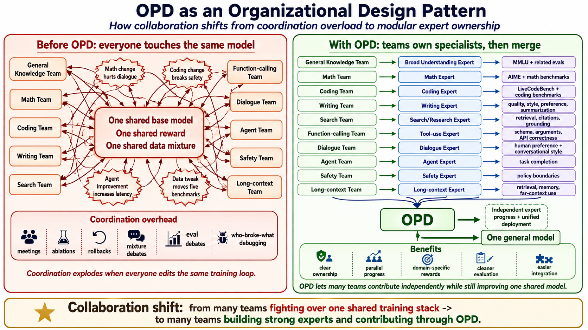

AI
On-Policy Distillation: The Frontier Lab Recipe for Merging Experts
OPD is not just a better technique for merging expert models. It is a way for a large AI lab to organize hundreds, or even thousands, of people to work around one shared giant model.
On-policy distillation (OPD) is not just a better technique for merging expert models. It is also a way for a large AI lab to organize hundreds, or even thousands, of people to work around one shared giant model like Gemini-3.5.
The simple version is this: different subteams can push different expert models independently, get credit for improving their own domain, and then use OPD to fold those expert behaviors back into a single model.
That is the part I find interesting. Not only the loss function. The production pattern.
Very roughly, modern LLM training has a few stages:
- Pretraining gives the model language, world knowledge, and basic reasoning.
- SFT and RL-based post-training make it follow instructions, answer more helpfully, and behave more like a chatbot product that also knows to call tools.
- Expert tuning pushes specific abilities further: math, coding, conversation, writing style, tool use, search, agents, safety, long context, and so on.
- OPD folds those specialized models back into one model people can actually use.
OPD is mostly about the last step: how to merge the behavior of many expert models into one shared model.
The term has recently become more visible because of the Thinking Machines Lab blog post on on-policy distillation [1]. Public technical reports from frontier labs, such as DeepSeek-V4 [2] and GLM-5 [3], also point toward this recipe. I would be careful about claiming that every lab uses exactly this recipe, or that a specific unreleased system uses OPD in this exact form. But as a way to think about frontier-model production, OPD feels very close to what the field is converging toward.
I see it at three levels.
1. The math is clean
The core idea of OPD is not complicated.
Instead of training a student model on answers the teacher wrote in advance, you let the student try the problem first. Then the teacher looks at the states the student actually visits and says, token by token: would I have done that?
That is what makes it on-policy. The training trajectory is rolled out from the current student policy, not from a fixed dataset of teacher completions.

A common version uses per-token reverse KL:
KL(pi_student || pi_teacher)
= E_{x ~ pi_student} [ log pi_student(x_{t+1}|x_{1..t}) - log pi_teacher(x_{t+1}|x_{1..t}) ]In plain English:
- the student generates its own answer;
- for each token it produced, we look at how confident the student was;
- we ask the teacher, usually the expert model for that prompt or domain, how likely that same token was in the same context;
- if the student confidently produced a token the teacher thinks is bad, the student gets penalized;
- over time, the student learns to behave more like the teacher in the states the student itself tends to reach.
This is different from ordinary off-policy distillation.
Classic distillation is more like copying the teacher’s answer. That works until the student makes its own mistake. Once the student drifts into a state that never appeared in the teacher’s trajectory, the supervision becomes much weaker.
OPD is more like having the teacher sit next to the student while the student works. If the student takes a wrong turn, the teacher gives feedback at the exact fork in the road.
That matters for reasoning. Many reasoning failures are not only wrong at the final answer. They go wrong at one small branching decision halfway through the chain. OPD can give dense feedback at those branching points instead of waiting until the end and saying “wrong.”
Before OPD, people already had other ways to combine abilities across models. The simplest family is model merging or weight averaging. Model Soups averages the weights of multiple fine-tuned models. TIES-Merging and DARE try to reduce interference between task deltas before merging.
2. It is cleaner than one giant mixed reward
The second way to look at OPD is as a training strategy.
Suppose you want a final model that is great at math, strong at coding, natural in conversation, reliable with tools, useful as an agent, and safe.
One obvious approach is to train one model with one big mixed reward:
Reward = math reward + coding reward + dialogue reward + agent reward + safety reward + ...This sounds reasonable. In practice, it gets ugly fast.
Each reward has a different scale. Some are sparse, some are dense. Some are easy to verify, some are subjective. Math often has a clean verifiable reward: the answer is right or wrong. Coding can run tests. But dialogue quality, writing style, helpfulness, safety boundaries, and agent behavior are much harder to score cleanly.
So the problem turns into messy multi-objective RL:
- one ability improves while another gets worse;
- reward hacking becomes harder to diagnose;
- training gets less stable;
- credit assignment gets blurry;
- teams argue about reward weights, data mixture, eval priority, and rollback criteria.
OPD gives you a different decomposition.
Do not force one model to improve on everything at once. First train specialists.
Each expert can use the reward, data, benchmark, and training recipe that fits its domain.
Then OPD distills the behavior of those experts into one unified model.
This does not magically solve everything. Experts will still disagree. A math expert may prefer long chains of thought. A dialogue expert may prefer a short answer. A safety expert may refuse. An agent expert may try to execute. A coding expert may be deterministic. A creative writing expert may want more entropy.
But the problem changes shape. Instead of being only a reward-engineering mess, it becomes a behavior-arbitration problem. You can handle that with routing, domain conditioning, teacher selection, KL weighting, mixture data, preference models, and post-training policy choices.
OPD does not remove conflict. It makes the conflict easier to manage.
3. It is an organizational design pattern
This is the part I care about most.
OPD is not just an algorithm. It is a way to organize a huge lab.
If a frontier AI lab has a thousand people, the hard question is not whether it has enough smart researchers. The hard question is how a thousand people’s work can add up inside the same model.
If everyone touches the same base model, the same reward, and the same data mixture, coordination explodes. A math change may hurt dialogue. A coding change may break safety. An agent improvement may increase latency. A data tweak may quietly move five benchmarks at once.
Then the organization spends a scary amount of time on meetings, ablations, rollbacks, mixture debates, eval debates, and who-broke-what debugging.
OPD allows hundreds of people to work together in a more independent way. Each team can push its own expert model, measure progress on its own evals, and still contribute to the final shared model.

One possible structure looks like this:
- General knowledge team: pushes broad understanding, using benchmarks like MMLU.
- Math team: focuses on math. Since math has strong verifiers, it can push hard on AIME, MATH, Olympiad-style problems, proof tasks, and symbolic reasoning.
- Coding team: focuses on coding. Coding can use unit tests, compilers, benchmark suites, repo-level editing tasks, bug fixing, code review, and agentic coding. It can push LiveCodeBench, SWE-bench, Codeforces-style tasks, and repo-level agent benchmarks.
- Writing team: focuses on structure, voice, creative writing, summarization, rewriting, instruction following, and preference matching.
- Search/research team: focuses on query rewriting, retrieval, source selection, evidence grounding, citations, and multi-hop research.
- Function-calling team: focuses on tool calls, schema following, argument extraction, API selection, multi-call planning, tool-result interpretation, and error recovery.
- Dialogue team: focuses on human preference and conversational style.
- Agent team: focuses on long-horizon task completion.
- Safety team: focuses on refusal boundaries and policy compliance.
- Long-context team: focuses on retrieval, memory, and keeping track of far-away information.
- Final step: OPD distills these specialized experts back into one general model.
Now the organization is divided by capability, not by one global reward soup.
Each team has one clean job: make its expert best in the world at that capability.
It does not need to constantly worry that its improvement will destroy every other ability, because the final integration is handled by the OPD/post-training pipeline.
That matters because frontier model training is no longer just a clever-loss-function problem. It is a large-scale engineering and organizational problem.
The bottleneck is not only GPUs. It is not only data. It is not only a clever new objective.
A real bottleneck is this:
How do you let a thousand people work in parallel on the same intelligence?
OPD is interesting because it turns “train one universal model” into “train many verifiable experts, then distill them back into one model.”
That feels a lot like modern software engineering.
You would not ask a thousand engineers to edit one giant function. You split the system into modules, define interfaces, write tests, run CI, and merge.
OPD may be the CI and merge system for frontier model training.
References / further reading
- [1] Thinking Machines Lab, “On-Policy Distillation” (Kevin Lu et al., 2025). The clearest public explanation of OPD I have seen so far, with reverse KL, pseudocode, Qwen3 reasoning distillation reproduction, and compute-efficiency discussion. thinkingmachines.ai/blog/on-policy-distillation
- [2] DeepSeek-AI, “DeepSeek-V4.” A relevant frontier-model reference for the direction of specialized post-training, expert-model integration, and deployable unified models.
- [3] Zhipu AI, “GLM-5.” A frontier-model example relevant to the broader trend of specialized post-training, expert behavior transfer, and unified model production.
- [4] Agarwal et al., “On-Policy Distillation of Language Models: Learning from Self-Generated Mistakes,” ICLR 2024. Introduces Generalized Knowledge Distillation (GKD). arxiv.org/abs/2306.13649
- [5] Wortsman et al., “Model Soups,” ICML 2022. A classic reference for weight averaging / model soups. arxiv.org/abs/2203.05482
- [6] Yadav et al., “TIES-Merging: Resolving Interference When Merging Models,” NeurIPS 2023. arxiv.org/abs/2306.01708
- [7] OpenAI, “Model Distillation in the API,” 2024. A product-level signal that distillation is part of the mainstream model production stack. openai.com/index/api-model-distillation
Senior Research Scientist at Snap Inc. Writing about AI research, model scaling, agents, and markets.
Comments